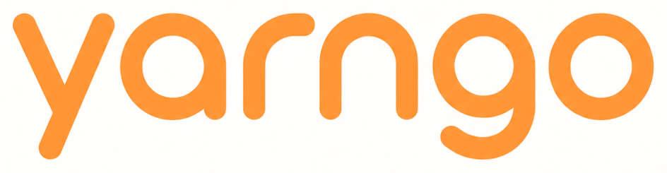
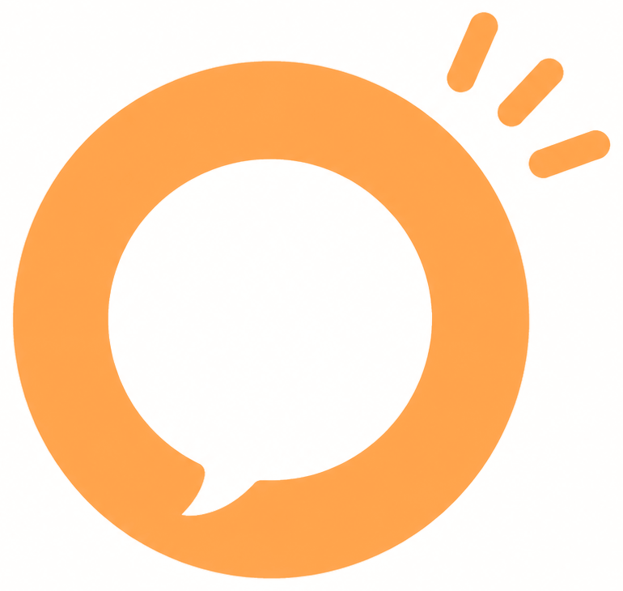
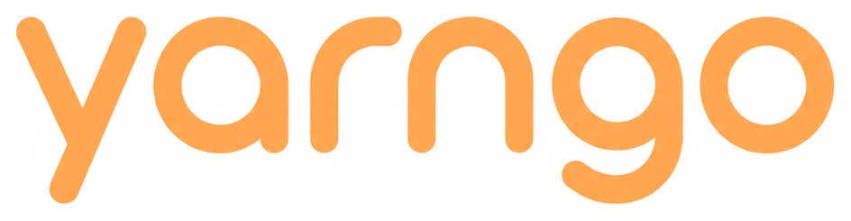

Voice AI for the way people actually speak. This document holds the brand — what Yarngo is, how it sounds, how it looks — and the design system the products are built from.
The brand test
Does it sound human?
Does it respect how the user actually speaks?
Is it obvious what the technology is doing?
Could this still feel like Yarngo outside Nigeria?
If the answer to any is no, revise it.
01
Brand & positioning
Yarngo begins with the Nigerian expression yarn, meaning to talk, tell, converse or gist, combined with go, suggesting movement and action. The origin is Nigerian. The ambition is global.
Brand idea
Voice AI for the way people actually speak.
Yarngo enables people to create, hear and interact with natural voice experiences across languages, accents and ways of speaking.
Brand promise
Speak naturally. Everywhere.
Yarngo should help a person sound like themselves, communicate in the language they want and move naturally between text, speech and conversation.
Positioning
For people and businesses that want voice technology to understand how people actually speak, Yarngo is a multilingual voice AI platform for creating, distributing and interacting through voice.
Unlike speech products designed primarily around dominant global accents and languages, Yarngo begins with linguistic diversity as a core product requirement.
Nigeria is the starting point, not the boundary.
Product architecture
Yarngo is always the master brand. No feature gets its own logo.
Yarngo Create
Generate, translate, preview and share speech.
Yarngo Channels
Subscribe to useful, entertaining or informative voice programming.
Yarngo Chat
Private AI conversations through text and voice.
Yarngo Voice
The cloud voice layer exposed across Yarngo products.
Yarngo API
Speech and language infrastructure for developers and businesses.
Yarngo Studio
Future professional workspace for creators, publishers and businesses.
Orange carries every consumer product. Signal Blue appears only on API and developer surfaces — it is the one place the system changes accent.
Naming — use
Yarngo
Sentence case in all writing. The lowercase yarngo is the visual wordmark, used for handles, domains and the app icon.
Naming — avoid
YARNGOYarn GoYarn-GoYarNGoYarnGo
Avoid excessive emphasis on the internal yarn + go construction. The name should become larger than its etymology.
02
Personality
The brand should make advanced speech technology feel human, expressive and culturally aware rather than clinical.
Human
Technology should disappear behind conversation.
Confident
The brand understands the cultures and languages it supports.
Expressive
Voice communicates more than words.
Curious
People speak differently. Yarngo treats that variation as valuable.
Culturally fluent
Local language should feel natural, not manufactured.
Playful when appropriate
Consumer experiences may use wit and rhythm.
Yarngo is not
robotic
corporate
patronizing
excessively slang-heavy
stereotypically “African”
futuristic for the sake of appearing technological
an imitation of Silicon Valley AI branding
03
Voice & tone
Short, clear and conversational. Interface copy is written the way a person would say it out loud.
Prefer
Your voice is ready.
Try another voice.
Instead of
Your requested audio generation has successfully completed.
Select an alternative voice configuration.
Nigerian English and Pidgin
Use naturally where the audience and context justify it. Do not perform Nigerian identity through exaggerated slang.
GOODWetin you wan yarn?
BADMy guy!!! Yarn am make we dey goooo!!!
Global audiences
Clear international English without removing the personality of the brand. Yarngo should feel culturally specific in origin while remaining understandable anywhere.
Campaign lines
Nigeria
Yarn am. Make your voice go. Talk your talk. However you yarn, Yarngo gets it.
Global
Find your voice. Make yourself heard. Your words, in your voice. Every voice has somewhere to go.
Do not make mango jokes or fruit references central to the master brand. The mango-like sound is a source of warmth and memorability, not the product proposition.
04
Logo & icon
The wordmark should feel rounded, fast and conversational. The standalone icon emerges from the wordmark rather than introducing a separate concept: the Yarngo o as a voice aperture.
Primary wordmark Lowercase, single weight, orange on light. The final o carries the speech aperture and three pulse ticks.
Simplified Below 120px wide, or on busy ground, use the plain cut.

A circular speech aperture that listens, understands and responds.
Orange on Warm White
Default

Orange 400 on Ink
Dark surfaces
Ink on Orange
Brand fields
Single colour
Print, stamps, partners
App icon
The aperture fills the tile. The wordmark never appears in an app icon.
Primary
Dark tile
Light tile
60
40
28
Below 40 the ticks and speech tail drop; the bare aperture carries it.
Clearspace & minimum size
Clearspace on all sides equals the height of the o. Minimum wordmark width 120px on screen, 30mm in print — below that the pulse ticks close up, so switch to the plain cut. Minimum icon size 24px; below that, drop the ticks and keep the aperture with its speech tail.
Misuse
✕A generic microphone placed beside the name
✕A literal mango as the primary logo
✕Gradients, bevels or drop shadows on the mark
✕Stretching, rotating or re-spacing the letterforms
✕Orange wordmark on mid-tone photography without a scrim
✕Separate logos for Create, Channels or Chat
A mango / speech-bubble interpretation can exist as illustration, mascot or campaign device — never as the corporate mark.
05
Color
Orange is an accent and brand field, not the default colour for long text. Ink carries typography. Warm White replaces sterile pure white on branded surfaces.
Yarngo Orange
#FF8A1F
Energy, voice, movement, warmth.
Yarngo Ink
#171717
Primary text, dark surfaces, wordmark.
Warm White
#FFF9F2
Primary light background.
Leaf
#287A57
Language, growth, cultural depth. Also success.
Signal Blue
#596DF8
API and developer surfaces. Sparingly.
Ramps
Orange500 is the brand value
50
100
200
300
400
500
600
700
800
900
NeutralWarm-biased greys — never pure grey
50
100
200
300
400
500
600
700
800
900
Leaf
50
100
300
500
700
900
Signal Blue
50
100
300
500
700
900
Semantic tokens
Product code references these, never raw hex. Light is the default; dark is a token swap, not a redesign.
Light — default
bg#FFF9F2
surface#FFFFFF
surface-sunken#F1EBE1
border#EBE4D9
text#171717
text-muted#5F594F
text-subtle#6B645A
accent#FF8A1F
accent-action#FF6E08
on-action#FFFEFD
accent-text#8F4406
accent-surface#FFF3E6
on-accent#171717
Dark
bg#121110
surface#1F1C19
surface-sunken#171513
border#35302A
text#FFF9F2
text-muted#B0A79B
accent#FF9C3D
accent-action#FF9C3D
on-action#171717
accent-text#FFB264
accent-surface#2E1F10
on-accent#171717
Success
#287A57 · Leaf
Warning
#C97A00 · Ochre
Danger
#C7362B
Info
#596DF8 · Signal
Contrast pairs
Ink on Orange7.6:1 · AA
White on brand orange #FF8A1F2.4:1 · never
#FFFEFD on action orange #FF6E082.78:1 · exception, orange surfaces with text
Ink on Warm White17.1:1 · AAA
Orange 800 on Warm White6.7:1 · AA
Orange 700 on Warm White4.2:1 · 24px+
Text on orange is always Ink. Orange as text on light starts at Orange 800; Orange 500 is a fill, never a label.
Rules
Orange is an accent and brand field, not the default colour for long text.
Use Ink for primary typography.
Prefer Warm White to sterile pure white for branded surfaces.
Do not create rainbow interfaces where every language receives an arbitrary flag-like colour.
Leaf carries language and success. Signal Blue is reserved for API and developer surfaces.
One accent per screen. If two things are orange, one of them is wrong.
Orange fields belong to brand moments — covers, campaigns, the app icon. In product, orange is a mark, a control and a state; the surface stays Warm White.
06
Typography
Sora for brand and headings. Noto Sans as the multilingual workhorse, because language coverage matters more than typographic novelty.
Display & headings400 / 600 / 700 / 800
Sora
AaBbCcDdEe 0123456789
Geometric, contemporary and friendly. Headings only — never body copy, never below 16px.
Product & body400 / 500 / 600 / 700
Noto Sans
AaBbCcDdEe 0123456789
All interface copy, all languages, all scripts. Extends to Noto Sans Mono on developer surfaces.
Diacritics are not optional
Yorùbá · Ìgbò · Hausa · Èkó · ọ̀rẹ́ · ṣé · ǹkẹ́
The product must render supported diacritics correctly. Typography must never require users to remove tone marks or alter spelling to fit the visual system. If a layout breaks on a tone mark, the layout is wrong.
Type scale
Token
Sample
Spec
display-1
Speak naturally
Sora 700 · 64/65 -2.5% · mobile 40
display-2
Speak naturally
Sora 700 · 48/50 -2% · mobile 32
h1
Choose a voice
Sora 600 · 36/41 mobile 28
h2
Choose a voice
Sora 600 · 28/34 mobile 24
h3
Choose a voice
Sora 600 · 22/29
title
Naija Pidgin
Sora 600 · 18/25 card and row titles
body-lg
Turn a thought into a voice note your people can feel.
Noto Sans 400 · 18/29
body
Turn a thought into a voice note your people can feel.
Noto Sans 400 · 16/26 product default
body-sm
Keep names and pronunciation clear.
Noto Sans 400 · 14/22 helper text
caption
AI-generated voice · 0:14
Noto Sans 400 · 13/18
label
Choose a voice
Noto Sans 600 · 12/14 +8% · uppercase
code
POST /v1/speech
Noto Sans Mono 400 · 13/20
Line length caps at 66 characters for body copy. Never letterspace lowercase body text. Sentence case everywhere except the label style.
07
Space, radius, elevation
A 4pt base with an 8pt working rhythm. Generous radii and soft warm shadows keep surfaces conversational rather than mechanical.
Spacing scale
space-14
space-28
space-312
space-416 · default gutter
space-520
space-624 · card padding
space-832
space-1040 · section gap
space-1248
space-1664
Mobile screen gutter is 16. Cards pad 24 and sit 12 apart. Vertical section rhythm is 40.
Radius
xs · 4
sm · 8
md · 12
lg · 16
xl · 24
full
full — primary voice actions, chips, avatars
lg / xl — cards, sheets, media tiles
md — inputs, secondary buttons
xs / sm — tags, code blocks, dense controls
Elevation
shadow-1
shadow-2
shadow-3
Shadows are warm-tinted Ink at low opacity — never neutral black. Level 1 for resting cards, 2 for menus and floating actions, 3 for sheets and modals. In dark mode, separate surfaces with a raised fill and a border; shadows do not read.
Layout
mobile4-column, 16 gutter, 16 margin. One primary action per screen.
tablet8-column, 24 gutter, 32 margin.
desktop12-column, 24 gutter, content capped at 1140.
targets44 minimum on every tappable element, including dense list rows.
rtlLayouts mirror. Waveforms and the aperture do not.
08
Iconography & imagery
One icon family drawn from the aperture: circular, open, rounded. Illustration and photography extend the same logic — icons carry state, imagery carries people.
Construction
24px grid, 2px live padding
2px stroke, round caps and joins
Circular geometry before rectangular
One weight — no filled variant except selected tabs
Scale to 20 and 32 by redrawing, not scaling strokes
Core set
Aperture
Voice
Create
Forward
Done
✕A microphone glyph as the voice icon — the aperture is the voice icon
✕Flags for languages, anywhere in the product
✕Decorative waveform bars where no audio exists
Illustration motifs
Bold, simple, rhythmic. Abstract forms from speech, vibration, repetition and call and response.
Sound that feels human
Uneven envelope, rounded ends. Never a symmetrical equalizer.
Speech pulses
The aperture radiating. Rings step down the orange ramp, never fade to grey.
Conversation in motion
Two forms overlapping. Leaf listens, orange answers.
Rhythm and understanding
Repetition with a centre. Two colours per motif, never more.
The mango shape may occasionally appear as an Easter egg or playful brand motif. It should never become the entire identity.
Photography — show
People speaking, listening, creating and sharing.
Real environments and close human moments
Creators, headphones and phones where relevant
Multiple generations, urban and non-urban contexts
Culturally specific environments, without turning them into scenery
Photography — avoid
Anything that pictures the technology instead of the person.
✕Robot heads and glowing AI brains
✕Generic waveform stock photography
✕African maps and national flags as shorthand for language
✕Staged “diversity” photography without product context
09
Components
Every control is built from the tokens above. Sizes are mobile-first: 52 tall for primary actions, 44 minimum everywhere else.
Buttons
Ink on orange, never white. Pill for voice actions, 12 radius for utility.
Primary button — documented contrast exception
Action orange #FF6E08 with a #FFFEFD label measures 2.78:1, below the 4.5:1 AA threshold and the 3:1 large-text floor. Accepted by the brand owner, and applied to every orange surface that carries text: primary buttons, brand panels, selected cards and chat bubbles. Every other orange surface keeps ink #171717 at 6.39:1. Brand orange #FF8A1F is unchanged for the logo, icons and meters. Dark theme does not take the exception: #FF6E08 goes muddy on #121110, so the dark primary keeps #FF9C3D with an ink label at 8.6:1.
Focus ring: 2px Signal Blue, 2px offset, on every focusable element.
Inputs
Write the note
How far my people, I dey reach soon
Keep names and pronunciation clear.34/500
Tell your people what’s on your mind…
Wetin you wan yarn?
That voice does not support Pidgin yet. Try Naija English.
Labels sit above the field, never inside it. Helper text stays put when an error appears — the error replaces nothing.
Chips & toggles
I dey reach soonWish Mum happy birthdaySelectedFilter · Yorùbá
Label as AI-generated
Always on. Cannot be disabled.
Send to WhatsApp
On
Autoplay replies
Off
Cards
PCSelected
Naija Pidgin
How far?
YO
Yorùbá
Báwo ni?
List rows
Naija Talks2.4K followers · DailyFollow
Life & Growth5.1K followers · WeeklyFollowing
Tech Worldwide6.7K followers · DailyFollow
Hairline dividers, never boxes. The row itself is the target.
Sheets & dialogs
Share this note
It will be labelled as AI-generated voice.
ShareCancel
Sheets for choices, dialogs only for destruction or consent. Both use radius 20 on the entering edge, shadow-3, and a scrim of Ink at 40%.
Tab bar
Create
Channels
Chat
You
Create
Channels
Chat
You
Ink bar, Orange 400 for the active tab, labels always visible. Four destinations maximum. The raised record control is a fifth slot only when recording is the app’s primary act — it replaces no destination and carries no label.
Segmented & feedback
For youLocalGlobal
Your voice is ready.
Low credits. About 2 minutes left.
Channels could not be loaded.
Search & mode row
Search channels
Naija✕
Text
Idea
Note
Story
The mode row sits under the input, never in the tab bar. Selected mode gets the accent surface, not a fill.
RespondAmplitude-driven. Tied to actual audio only.
Avoid aggressive equalizer animations and fake audio waveforms that do not correspond to actual state. Honour prefers-reduced-motion by removing loops, not by removing feedback.
12
Data display
Yarngo shows people what they used and what it bought them. Orange marks the value in focus; everything else is neutral. Languages never get their own colours.
Credits
300
About 10 minutes of standard cloud voice
186 used500 total
Minutes by language
Naija Pidgin42
Yorùbá28
Igbo17
English9
One orange bar per chart — the rest step down the neutral ramp.
Notes this week
MTWTFSS
No pie charts. No gradients in data. Every number that costs money is shown with what it buys, in plain minutes.
13
Accessibility
A voice product carries a specific obligation: everything audible must also be readable, and everything visual must also be announced.
Contrast
4.5:1 for body text, 3:1 for large text and UI boundaries. Orange 500 never carries text on light. Brand orange #FF8A1F carries ink and is reserved for the logo, icons, waveforms and meters. Any orange surface carrying text uses action orange #FF6E08 with a #FFFEFD label, the one documented exception. The lightest colour any string may use is text-subtle at 5.8:1. text-nontext is one step lighter and never carries a string — icons, dividers and disabled marks only.
Targets
44px minimum, 8px between adjacent targets. The record control is 64px and never shares an edge with another control.
Focus
2px Signal Blue ring at 2px offset, visible on every focusable element in both modes. Never removed.
Audio equivalence
Every generated note ships with its source text. Channels episodes carry transcripts. Audio is never the only way to receive information.
Language marking
Every text run declares its language so screen readers pronounce it correctly. Tone marks are content, not styling.
Motion & sound
Reduced motion removes loops, not feedback. Nothing autoplays with sound. Text scales to 200% without clipping.
14
Product language
Fixed strings across the products, so recognition accumulates instead of resetting per surface.
Create
What do you want to say?
Choose a voice
Generate voice
Ready to share
Channels
Listen to what matters to you.
Follow channel
New episode
Chat
Start a conversation
Text
Talk
Hear reply
Credits
Yarngo Credits. No invented monetary metaphor.
300 credits About 10 minutes of standard cloud voice
AI disclosure
AI-generated voice
Generated speech must never pretend to be human-generated when that distinction matters. Trust is part of the product identity, not compliance copy hidden in settings.
Your note is readyNaija Pidgin · AI-generated voice · 0:14
The label travels with the audio. It is present in the player, in the share sheet, and in the file itself.
15
Create, rebuilt
The voice-note flow, assembled only from the tokens and components above. Same markup in both modes — dark is a token swap, not a second design.
AO
Create voice note
Turn your words into voice.
Write what you want to say and we’ll turn it into a natural voice note.
1Choose a language
EN
English
Hello
PC
Pidgin
How far?
YO
Yorùbá
Báwo ni?
2Write the note
I dey reach soon
16/500
Wish Mum happy birthdaySend market update
3Choose a voice
Sora
Warm · Clear
Amaka
Bright
Teni
Calm
Create voice note
Every note is labelled as AI-generated voice before it is shared.
Create
Channels
Chat
Profile

AO
Create voice note
Turn your words into voice.
Write what you want to say and we’ll turn it into a natural voice note.
1Choose a language
EN
English
Hello
PC
Pidgin
How far?
YO
Yorùbá
Báwo ni?
2Write the note
I dey reach soon
16/500
Wish Mum happy birthdaySend market update
3Choose a voice
Sora
Warm · Clear
Amaka
Bright
Teni
Calm
Create voice note
Every note is labelled as AI-generated voice before it is shared.
Create
Channels
Chat
Profile
What changed
The surface stays Warm White. Orange is a mark, a control and a state — never a field the content sits on.
Selection is an orange border and a check badge, not an orange fill.
Leaf carries the quiet marks: language bubbles, unselected voices.
The tab bar is a light surface with a hairline, not a black slab.
Sora replaces the display face; Noto Sans carries all copy and tone marks.
The aperture replaces the bar-cluster logo and the microphone.
{kind=link}
{kind=link}